Product directions
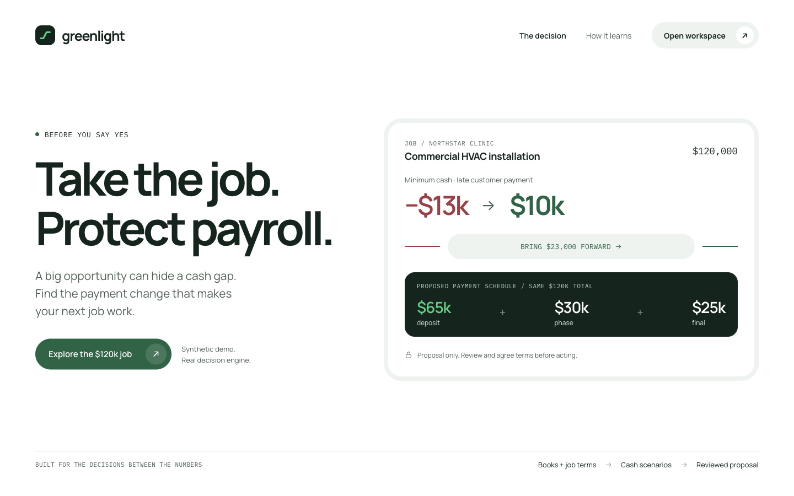
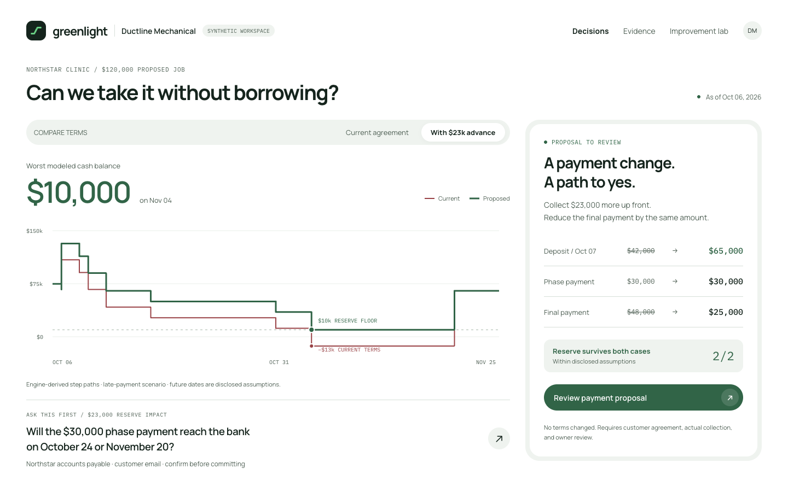
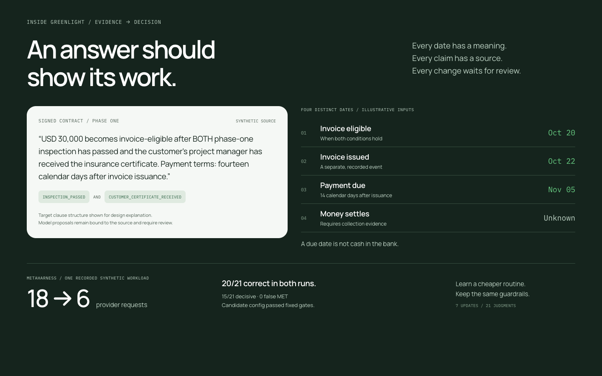
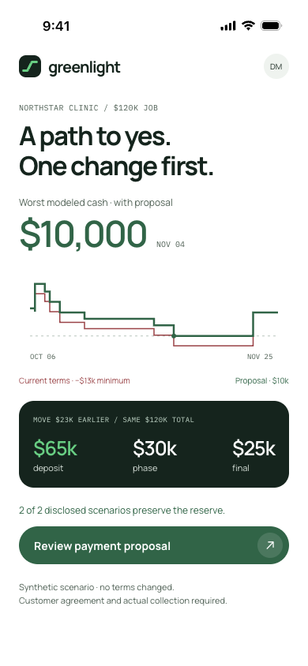
36-second launch storyboard
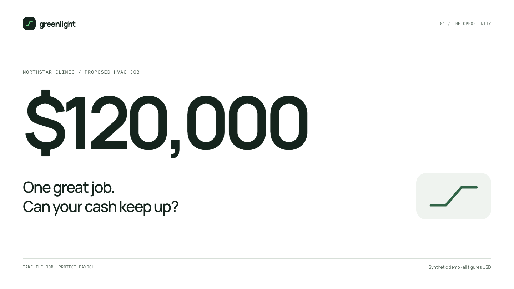
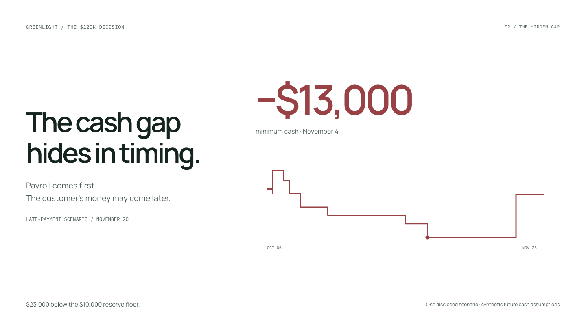
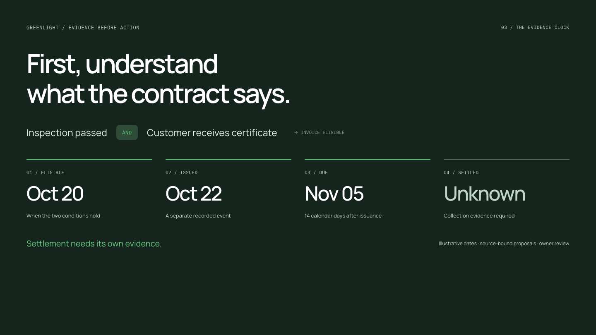
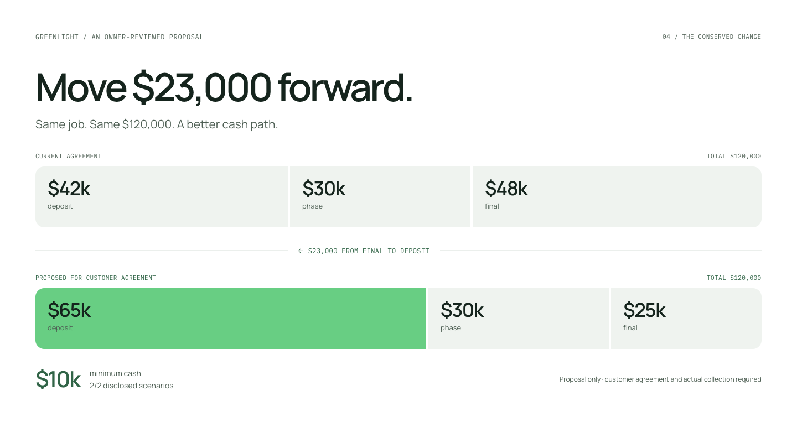
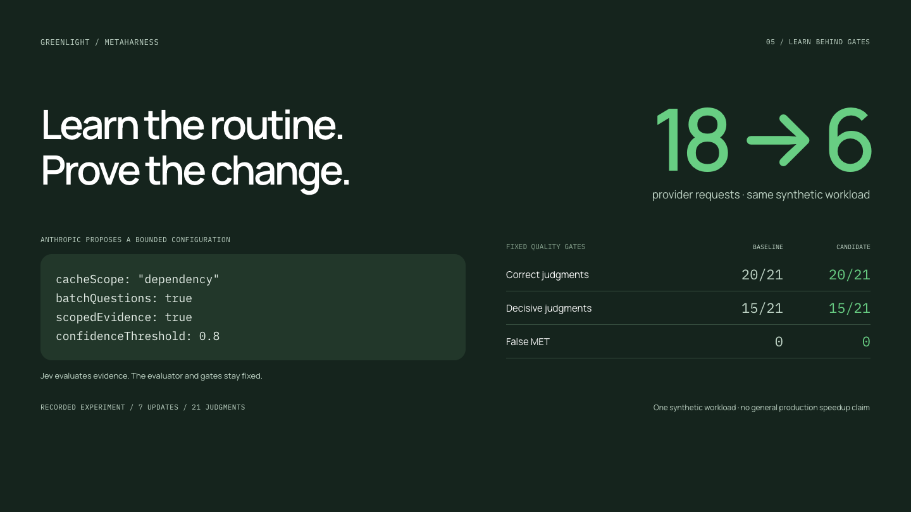
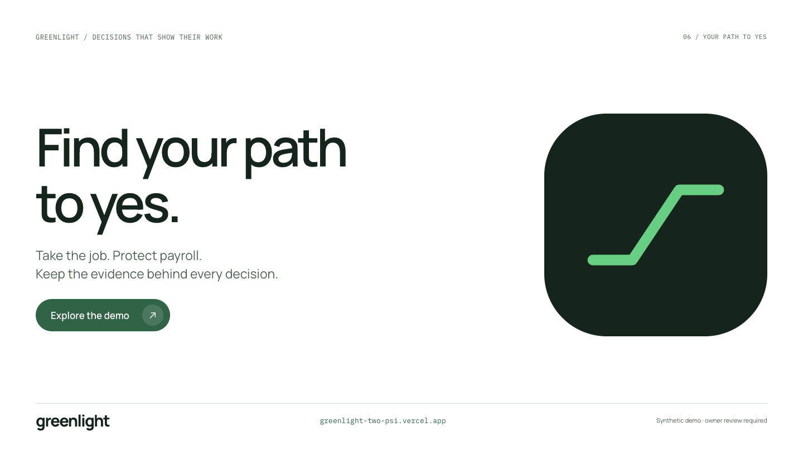
Design and motion specification
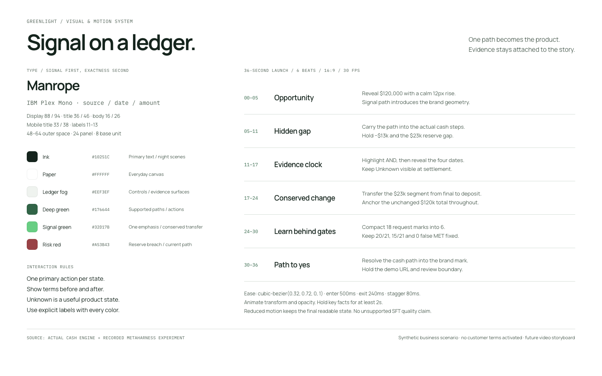
Four product directions and six frames for a future 36-second launch film. Authored in Paper with exact cash-engine paths and a measured MetaHarness result. This is a design artifact gallery, separate from the deployed app.










